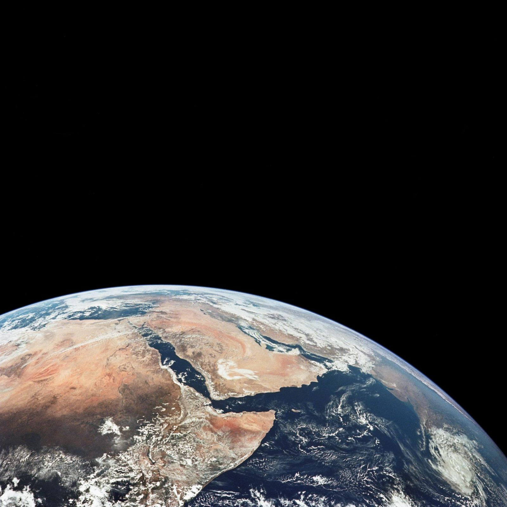
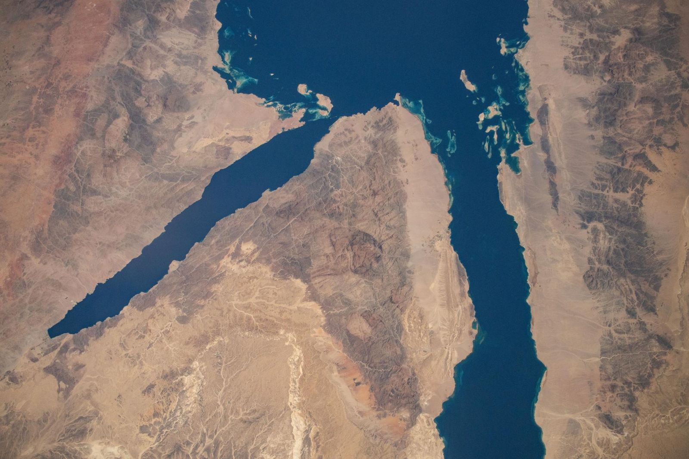

Part 2: Minerals, Rocks and Plates · Chapter 8 of 15
Drifting Continents
How a once-ridiculed idea became the foundation of modern geology.

Look at a world map and the coastlines of South America and Africa seem to fit together like jigsaw pieces. In 1915 the German scientist Alfred Wegener argued that this was no accident. In his book The Origin of Continents and Oceans he proposed that the continents had once been joined in a single supercontinent, which he called Pangaea, and had since drifted apart.
His evidence was strong. Matching rock formations and mountain belts line up across the Atlantic. Identical fossils of land plants and reptiles that could not have crossed an ocean are found on continents now thousands of kilometres apart. Traces of ancient glaciers appear in places that are now tropical.
Why it took fifty years
Most geologists rejected continental drift because Wegener could not explain what force could push continents through solid ocean floor. The answer came from mapping the sea bed after the Second World War. Scientists found the mid-ocean ridges, discovered that the ocean floor gets steadily older away from them, and found matching stripes of magnetism recorded in the rock on either side. The ocean floor itself was spreading. Continents do not plough through the oceans; they ride along on moving plates.

An ocean being born
The Red Sea shows what the early Atlantic must have looked like. It lies in a rift, a long crack where the Arabian plate is pulling away from Africa. The rift continues north along the Gulf of Aqaba and the Dead Sea, and south into the East African Rift Valley. Given enough time, the Red Sea may widen into a full ocean.
Key terms
- continental drift
- The very slow movement of the continents across the earth’s surface, carried on moving plates.
- Alfred Wegener
- The German scientist who explained the theory of continental drift in the early 1900s.
- fossil
- The preserved remains or traces of a plant or animal that lived long ago.
- Pangaea
- The name scientists give to the single supercontinent that existed about 200 million years ago.
- rift
- A long crack where the earth’s shell is splitting apart.
- Red Sea
- The narrow sea between Africa and Arabia. It is slowly widening as Arabia drifts away from Africa.
- Atlantic Ocean
- The ocean between the Americas and Europe and Africa. Similar rocks and fossils on both sides show the continents were once joined.
Check your understanding
Think of your answer, then open each question to compare.
What evidence did Wegener use for continental drift?
The fit of coastlines, matching rocks and mountain belts across oceans, identical fossils on separate continents, and traces of ancient glaciers in now-tropical places.
Why was his idea rejected at first?
He could not explain what force moved the continents.
Which discovery finally explained drift?
Sea-floor spreading at mid-ocean ridges, shown by the age and magnetic stripes of the ocean floor.